We show EchoNeRF's two-stage learning process below and compare with the ground truth floorplan. At the end, we also show the learning process of NeRF2 (baseline), which is unable to solve the inverse problem.
3. How do the voxels' opacity change over time?
Ground Truth
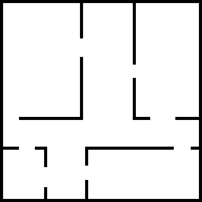
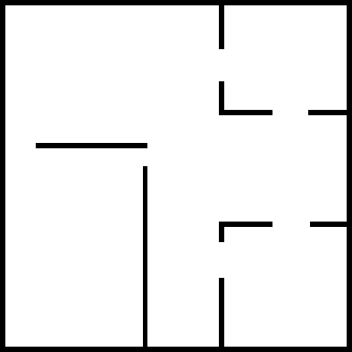
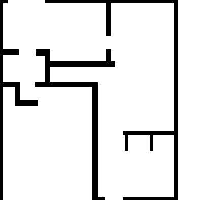
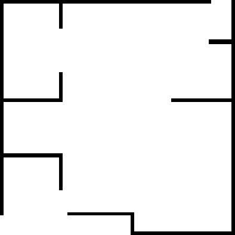
Stage 1

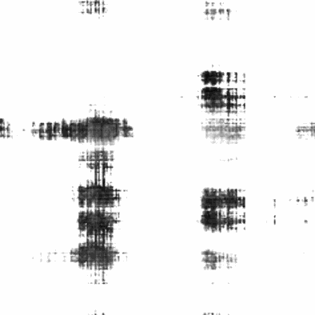
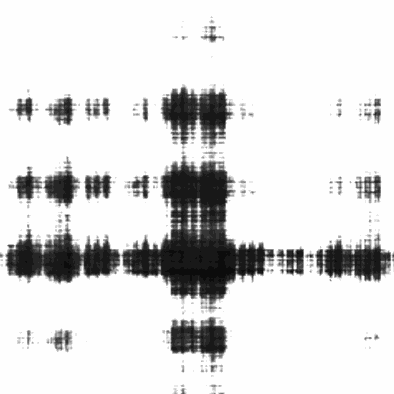
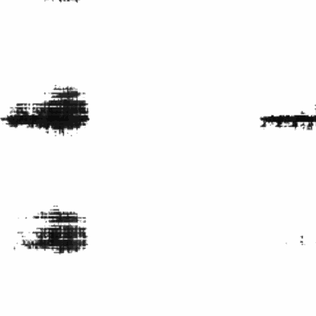
Stage 2
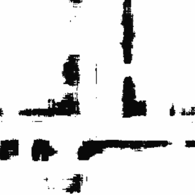
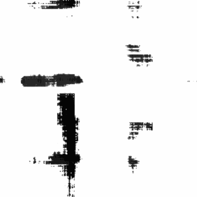
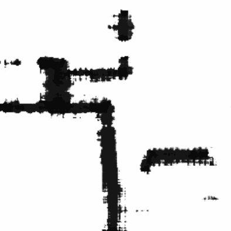
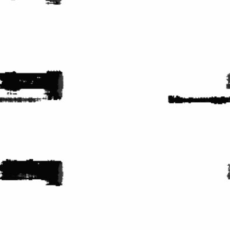
NeRF2
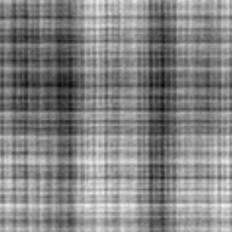
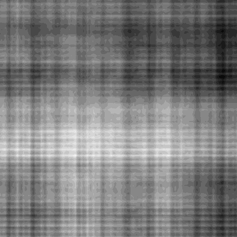
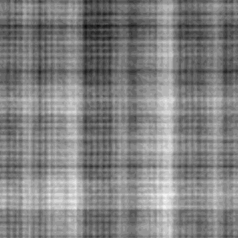
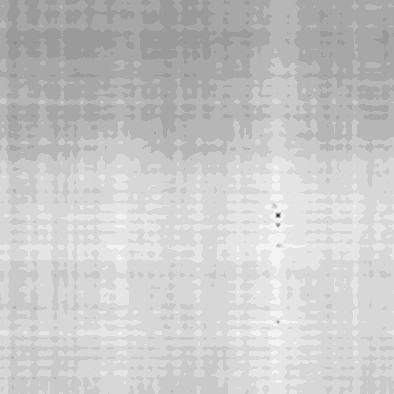